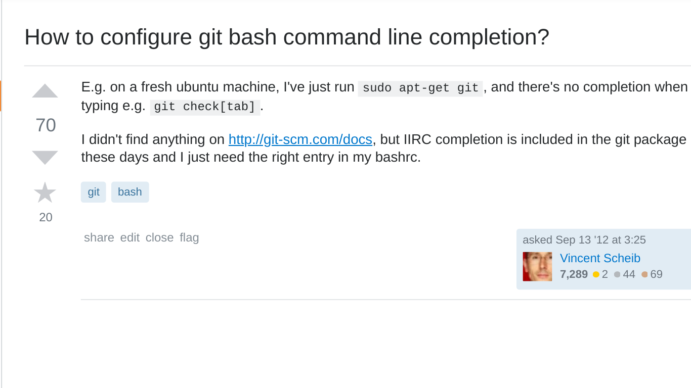

Beyond everyday git
I didn't know git could do that!
git config --global user.name "Ben Peachey"
git config --global user.email "potherca@gmail.com"
Git
- First stable release :
2005 - Current Version :
v2.19.1 - Contributors :
1233 - License :
GPLv2
139 Git Commands
- add
- am
- annotate
- apply
- archimport
- archive
- bisect
- blame
- branch
- bundle
- cat-file
- check-attr
- check-ignore
- check-mailmap
- check-ref-format
- checkout-index
- checkout
- cherry-pick
- cherry
- citool
- clean
- clone
- column
- commit-graph
- commit-tree
- commit
- config
- count-objects
- credential-cache
- credential-store
- credential
- cvsexportcommit
- cvsimport
- cvsserver
- daemon
- describe
- diff-files
- diff-index
- diff-tree
- diff
- difftool
- fast-export
- fast-import
- fetch-pack
- fetch
- filter-branch
- fmt-merge-msg
- for-each-ref
- format-patch
- fsck
- gc
- get-tar-commit-id
- gitk
- gitweb
- grep
- gui
- hash-object
- help
- http-backend
- http-fetch
- http-push
- imap-send
- index-pack
- init
- instaweb
- interpret-trailers
- log
- ls-files
- ls-remote
- ls-tree
- mailinfo
- mailsplit
- merge-base
- merge-file
- merge-index
- merge-one-file
- merge-tree
- merge
- mergetool
- mktag
- mktree
- mv
- name-rev
- notes
- pack-objects
- pack-redundant
- pack-refs
- parse-remote
- patch-id
- prune-packed
- prune
- pull
- push
- quiltimport
- read-tree
- rebase
- receive-pack
- reflog
- remote
- repack
- replace
- request-pull
- rerere
- reset
- rev-list
- rev-parse
- revert
- rm
- send-email
- send-pack
- sh-i18n
- sh-setup
- shell
- shortlog
- show-branch
- show-index
- show-ref
- show
- stash
- status
- stripspace
- submodule
- svn
- symbolic-ref
- tag
- unpack-file
- unpack-objects
- update-index
- update-ref
- update-server-info
- upload-archive
- upload-pack
- var
- verify-commit
- verify-pack
- verify-tag
- whatchanged
- worktree
- write-tree
About this talk
CLI Only
| Linux | MacOS | Windows | |
|---|---|---|---|
| Popular | BASH | Terminal | PowerShell |
| Alternative | zsh | iTerm2 | Git for Windows |
Examples
bash command
Content of the "filename.ext" file.
parameter(s) for git command
https://link.to/more#informationAn example
git checkout -
Config
Config
git config --list --global
user.name=Ben Peachey
user.email=potherca@gmail.com
git config --edit
[user]
name = Ben Peachey
email = potherca@gmail.com
Git config includes
[include]
path = /path/to/foo.inc
include.path /path/to/foo.inc
https://git-scm.com/docs/git-config#_includesGit config includes
[include]
path = ~/.gitconfig-alias
path = ~/.gitconfig-user
Conditional includes
Include for all repositories inside $HOME/to/group
[includeIf "gitdir:~/to/group/"]
path = /path/to/foo.inc
includeIf.gitdir:~/to/group/ /path/to/foo.inc
https://git-scm.com/docs/git-config#_includesHelp!
git help
git help
usage: git [--version] [--help] [-C <path>] [-c name=value]
[--exec-path[=<path>]] [--html-path] [--man-path] [--info-path]
[-p | --paginate | --no-pager] [--no-replace-objects] [--bare]
[--git-dir=<path>] [--work-tree=<path>] [--namespace=<name>]
<command> [<args>]
These are common Git commands used in various situations:
start a working area (see also: git help tutorial)
clone Clone a repository into a new directory
init Create an empty Git repository or reinitialize an existing one
work on the current change (see also: git help everyday)
add Add file contents to the index
mv Move or rename a file, a directory, or a symlink
reset Reset current HEAD to the specified state
rm Remove files from the working tree and from the index
examine the history and state (see also: git help revisions)
bisect Use binary search to find the commit that introduced a bug
grep Print lines matching a pattern
log Show commit logs
log Show commit logs
show Show various types of objects
status Show the working tree status
grow, mark and tweak your common history
branch List, create, or delete branches
checkout Switch branches or restore working tree files
commit Record changes to the repository
diff Show changes between commits, commit and working tree, etc
merge Join two or more development histories together
rebase Reapply commits on top of another base tip
tag Create, list, delete or verify a tag object signed with GPG
collaborate (see also: git help workflows)
fetch Download objects and refs from another repository
pull Fetch from and integrate with another repository or a local branch
push Update remote refs along with associated objects
'git help -a' and 'git help -g' list available subcommands and some
concept guides. See 'git help <command>' or 'git help <concept>'
But wait!
There's More!
usage: git [--version] [--help] [-C <path>] [-c name=value]
[--exec-path[=<path>]] [--html-path] [--man-path] [--info-path]
[-p | --paginate | --no-pager] [--no-replace-objects] [--bare]
[--git-dir=<path>] [--work-tree=<path>] [--namespace=<name>]
<command> [<args>]
available git commands in '/usr/lib/git-core'
add merge-one-file
add--interactive merge-ours
am merge-recursive
annotate merge-resolve
apply merge-subtree
archive merge-tree
bisect mergetool
bisect--helper mktag
blame mktree
branch mv
bundle mw
cat-file name-rev
check-attr notes
check-ignore pack-objects
check-mailmap pack-redundant
check-ref-format pack-refs
checkout patch-id
checkout-index prune
cherry prune-packed
cherry-pick pull
citool push
clean quiltimport
clone range-diff
column read-tree
commit rebase
commit-graph rebase--helper
commit-tree receive-pack
config reflog
count-objects remote
credential remote-ext
credential-cache remote-fd
credential-cache--daemon remote-ftp
credential-store remote-ftps
cvsexportcommit remote-http
cvsimport remote-https
cvsserver remote-mediawiki
daemon remote-testsvn
describe repack
diff replace
diff-files request-pull
diff-index rerere
diff-tree reset
difftool rev-list
difftool--helper rev-parse
fast-export revert
fast-import rm
fetch send-email
fetch-pack send-pack
filter-branch serve
fmt-merge-msg sh-i18n--envsubst
for-each-ref shell
format-patch shortlog
fsck show
fsck-objects show-branch
gc show-index
get-tar-commit-id show-ref
grep stage
gui stash
gui--askpass status
hash-object stripspace
help submodule
http-backend submodule--helper
http-fetch subtree
http-push svn
imap-send symbolic-ref
index-pack tag
init unpack-file
init-db unpack-objects
instaweb update-index
interpret-trailers update-ref
log update-server-info
ls-files upload-archive
ls-remote upload-pack
ls-tree var
mailinfo verify-commit
mailsplit verify-pack
merge verify-tag
merge-base web--browse
merge-file whatchanged
merge-index worktree
merge-octopus write-tree
git commands available from elsewhere on your $PATH
cherry-copy get-branch is-current out pull-request
cherry-move info l prompt
'git help -a' and 'git help -g' list available subcommands and some
concept guides. See 'git help >command<' or 'git help >concept<'
to read about a specific subcommand or concept.
The common Git guides are:
attributes Defining attributes per path
cli Git command-line interface and conventions
core-tutorial A Git core tutorial for developers
cvs-migration Git for CVS users
diffcore Tweaking diff output
everyday A useful minimum set of commands for Everyday Git
glossary A Git Glossary
hooks Hooks used by Git
ignore Specifies intentionally untracked files to ignore
modules Defining submodule properties
namespaces Git namespaces
repository-layout Git Repository Layout
revisions Specifying revisions and ranges for Git
tutorial A tutorial introduction to Git
tutorial-2 A tutorial introduction to Git: part two
workflows An overview of recommended workflows with Git
'git help -a' and 'git help -g' list available subcommands and some
concept guides. See 'git help >command<' or 'git help >concept<'
to read about a specific subcommand or concept.
That's a lot of help
Open help in a browser*
* Requires the git-doc package to be installed
git help --web
Open help in a browser
file://localhost/usr/share/doc/git/html/git.html
GIT-HELP(1) Git Manual GIT-HELP(1)
NAME
git-help - Display help information about Git
SYNOPSIS
git help [-a|--all] [-g|--guide]
[-i|--info|-m|--man|-w|--web] [COMMAND|GUIDE]
DESCRIPTION
With no options and no COMMAND or GUIDE given, the synopsis of the git command and a list of the most commonly
used Git commands are printed on the standard output.
If the option --all or -a is given, all available commands are printed on the standard output.
If the option --guide or -g is given, a list of the useful Git guides is also printed on the standard output.
If a command, or a guide, is given, a manual page for that command or guide is brought up. The man program is
used by default for this purpose, but this can be overridden by other options or configuration variables.
Note that git --help ... is identical to git help ... because the former is internally converted into the
latter.
To display the git(1) man page, use git help git.
This page can be displayed with git help help or git help --help
OPTIONS
-a, --all
Prints all the available commands on the standard output. This option overrides any given command or guide
name.
-g, --guides
Prints a list of useful guides on the standard output. This option overrides any given command or guide
name.
-i, --info
Display manual page for the command in the info format. The info program will be used for that purpose.
-m, --man
Display manual page for the command in the man format. This option may be used to override a value set in
the help.format configuration variable.
By default the man program will be used to display the manual page, but the man.viewer configuration
variable may be used to choose other display programs (see below).
-w, --web
Display manual page for the command in the web (HTML) format. A web browser will be used for that purpose.
The web browser can be specified using the configuration variable help.browser, or web.browser if the
former is not set. If none of these config variables is set, the git web--browse helper script (called by
git help) will pick a suitable default. See git-web--browse(1) for more information about this.
Always open help in a browser
[help]
format = web
help.format web
https://git-scm.com/docs/git-config#git-config-helpformatSelect a browser
[help]
browser = firefox
help.browser firefox
https://git-scm.com/docs/git-config#git-config-helpbrowserAlias
Git alias
[alias]
name = command
alias.name command
https://git-scm.com/docs/git-config#git-config-aliasGit alias
[alias]
unstage = reset HEAD --
alias.unstage 'reset HEAD --'
https://git-scm.com/book/en/v2/Git-Basics-Git-AliasesShell command as alias
If the alias expansion is prefixed with an exclamation point, it will be treated as a shell command.
Shell commands will be executed from the top-level directory of a repository, which may not necessarily be the current directory.https://git-scm.com/docs/git-config#git-config-alias
Shell command as alias
echo "Hello!"
[alias]
hello = !echo "Hello!"
alias.hello '!echo "hello"'
Shell command as alias
git hello
Hello!

Shell command as alias
git config --list | grep 'alias.' | sort | cut -d= -f1
[alias]
alias = !git config --list | grep 'alias.' | sort | cut -d'.' -f1,
alias.alias '!git config --list | grep "alias." | sort | cut -d"." -f1,'
Shell command as alias
git alias
alias.alias
alias.hello
alias.unstage
Don't use aliasses for native functions
Use autocompletion instead
Auto Complete
Auto Complete
git sta<TAB>
stage stash status
git stat<TAB>
git status --<TAB><TAB>
--ahead-behind --ignore-submodules --no-renames --short
--branch --ignored --null --show-stash
--column --long --porcelain --untracked-files
--find-renames --no-... --renames --verbose
git status --b<TAB>
git status --branch
[...]Auto Complete
https://stackoverflow.com/questions/12399002/how-to-configure-git-bash-command-line-completion

Autocorrect
Git Suggestions
git meh
git: 'meh' is not a git command. See 'git --help'.
Did you mean one of these?
fetch
merge
shell
Git Autocorrect
[help]
autocorrect = 35
help.autoCorrect 35
https://git-scm.com/docs/git-config#git-config-helpautoCorrectGit Autocorrect
git doh
WARNING: You called a Git command named 'doh', which does not exist.
Continuing under the assumption that you meant 'show'
in 3.5 seconds automatically...
[...]
Git Autocorrect
If the value of this option is negative, the corrected command will be executed immediately.
Git Autocorrect
git doh
WARNING: You called a Git command named 'doh', which does not exist.
Continuing under the assumption that you meant 'show'
[...]
Git Autocorrect
With multiple options
git meh
git: 'meh' is not a git command. See 'git --help'.
Did you mean one of these?
fetch
merge
shell
Behaves just like normal suggestion...
Ignore This
Git ignore
IgnoredFolder/*
ignored-file.txt
Git ignore
git status --ignored
On branch master
Your branch is up to date with 'origin/master'.
Ignored files:
(use "git add -f <file>..." to include in what will be committed)
IgnoredFolder/
ignored-file.txt
nothing to commit, working tree clean
Git ignore
### IDE ###
nbbuild # Netbeans
.idea/ # IntelliJ
.project # Eclipse
.vscode/* # VisualStudioCode
### Linux ###
*~
### macOS ###
.DS_Store
.AppleDouble
.LSOverride
._*
### Windows ###
Thumbs.db
[Dd]esktop.ini
### WHO KNOWS WHAT ELSE ... ###
dont do this!
Three levels of ignorance
Global / Repository / Local

Three levels of ignorance
| Global Exclude File |
Repository Ignore File |
Local Exclude File |
|---|---|---|
| This machines only | This machines only | |
| This repo only | This repo only | |
| Committed | ||
| Configurable | Configurable |
Global git ignore
[core]
excludesfile = ~/.gitignore
core.excludesfile ~/.gitignore
https://git-scm.com/docs/git-config/#git-config-coreexcludesFileThree levels of ignorance
Global / Repository / Local

git ignore
Resources
-
A collection of useful .gitignore templates
https://github.com/github/gitignore -
Create useful .gitignore files for your project
https://www.gitignore.io/
What have I done!?
Branch status
git branch --verbose
* master f44599481 [ahead 2] Last commit message on master.
develop 4563a0d9d [behind 35] The last commit message on develop.
other 260071fdb Last commit message of the other branch.
Shows which branches are ahead/behind
Unpushed changes
git log @{upstream}..
commit f44599481cc692ed78b8f14db2c6b66671daaee2 (HEAD -> master)
[...]
Unpushed changes
On all branches
git log --branches --not --remotes
commit f44599481cc692ed78b8f14db2c6b66671daaee2 (HEAD -> master)
[...]
commit 58c6697c7cd38bbc246e18496d23a08cc6e02ef8 (other)
[...]
Unpushed changes
On all branches
[alias]
unpushed = log --branches --not --remotes
alias.unpushed 'log --branches --not --remotes'
Sources:
- Slideshow made with reveal.js
- Question icon by Krisada from The Noun Project licensed under Creative Commons Attribution